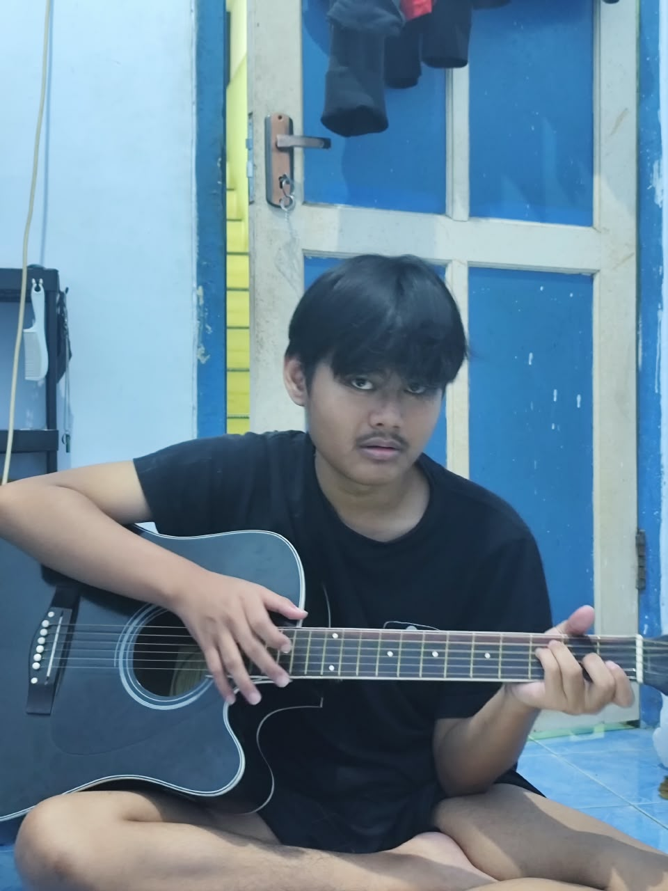

Zaki
Gamers Gantenk Idaman
10 Kandidat Calon Pacar Zaki:
Zaki, manusia yang selama 21 tahun hidupnya berhasil menjaga status jomblo tetap konsisten tanpa pernah sekalipun mengalami gangguan hubungan percintaan. Prestasi yang luar biasa, karena di saat orang lain sudah berganti-ganti pasangan, Zaki masih setia dengan prinsip: “pacaran nanti aja kalau sudah waktunya.” Dan sepertinya waktunya sekarang sudah tiba, karena Zaki akhirnya punya satu cita-cita besar dalam hidupnya: ingin punya pacar setelah 21 tahun lamanya belum pernah punya pacar seumur hidupnya. Semoga tahun ini bukan cuma umur yang bertambah, tapi juga status dari “single” menjadi “punya seseorang”, karena kalau sampai tahun depan masih jomblo, mungkin bukan kurang usaha… tapi memang server jodohnya belum online.
